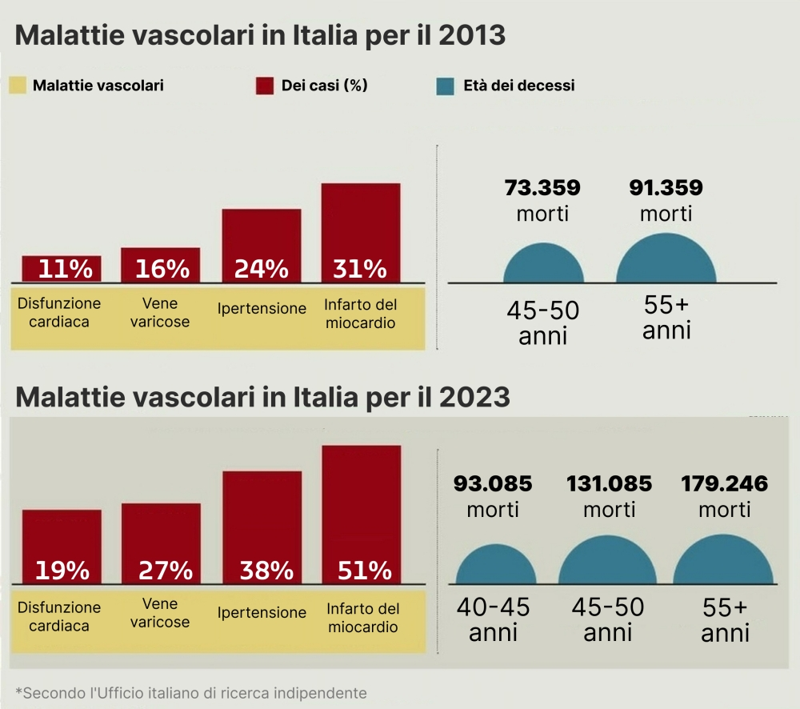
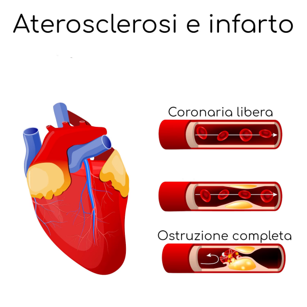
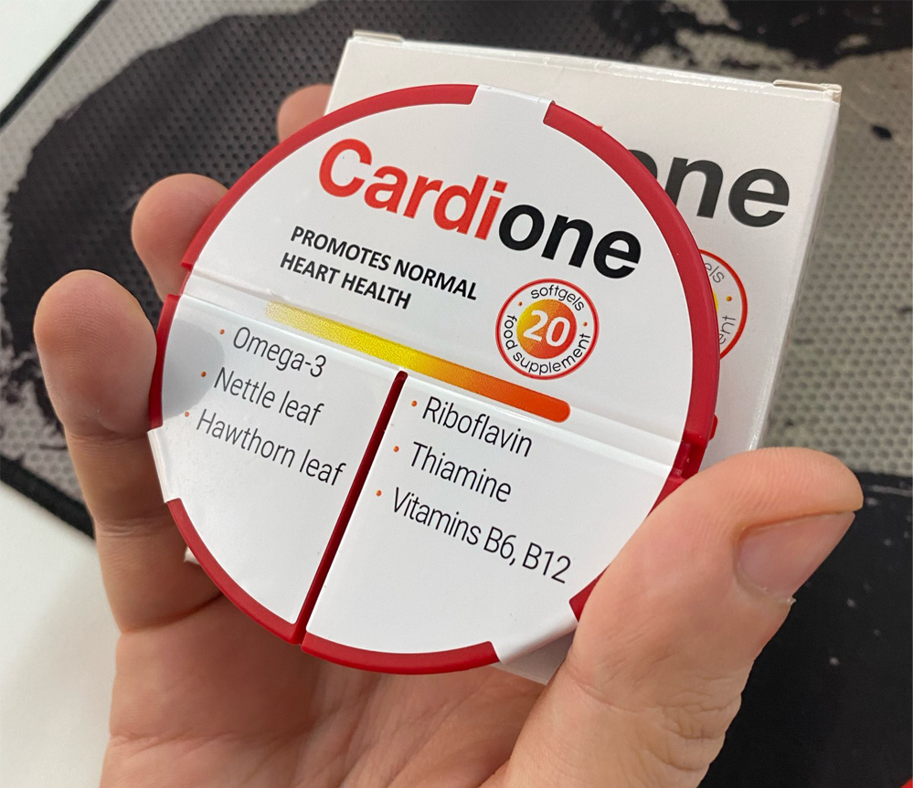
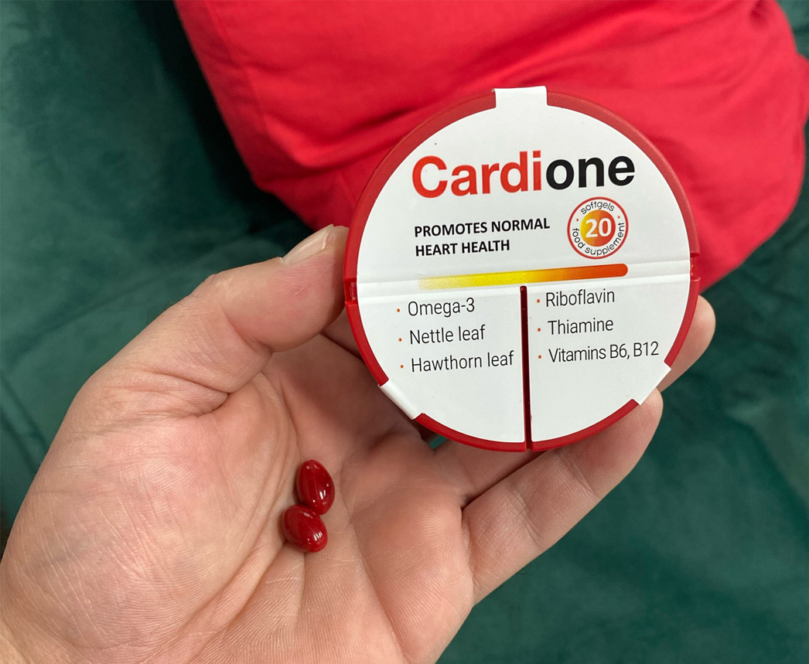
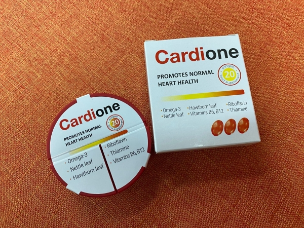

Il , durante le vacanze natalizie in Italia, {_land_name2}, famosa attrice e cantante conosciuta in tutto il mondo, è stata ricoverata d'urgenza per i sintomi di un attacco cardiaco e immediatamente trasportata in una delle migliori cliniche d'Italia: il reparto di cardiochirurgia del Policlinico San Donato vicino a Milano.
Il professor {_land_name}, il medico curante di {_land_name2}, ha deciso di non eseguire un intervento chirurgico al cuore a causa degli alti rischi, tenendo in considerazione l'età avanzata della paziente. Il Dr. {_land_name} ha utilizzato nel trattamento un nuovo farmaco sperimentale, che si ritiene abbia giocato un ruolo chiave nel salvare la vita della celebrità.
Il professore {_land_name} sottolinea l'importanza di prestare attenzione alla salute vascolare, soprattutto dopo i 40 anni, evidenziando le statistiche italiane e il numero di decessi legati alle malattie vascolari.
Ultimo aggiornamento: Al , le condizioni di {_land_name2} sono valutate come stabili e non rappresentano una minaccia per la vita e la salute.
Il ricovero di {_land_name2}, un'icona del cinema mondiale, ha attirato l'attenzione sulla questione delle malattie cardiovascolari, portando l'attenzione del pubblico sulla terribile statistica di mortalità per infarti in Italia dal 2013 al 2023 e sull'introduzione di un innovativo farmaco che, secondo i suoi creatori, è attualmente il metodo più sicuro ed efficace per ripristinare e pulire i vasi sanguigni.
Il professor {_land_name} ha collaborato attivamente con il team che ha sviluppato il nuovo farmaco preso da {_land_name2}. La sua creazione è avvenuta in collaborazione con 18 dei migliori scienziati italiani. Per questo motivo, il dottor {_land_name} ha insistito sulla sua scelta, come metodo completamente sicuro e senza eguali in termini di efficacia, in grado di ripristinare al 100% la circolazione sanguigna naturale e di riportare i vasi sanguigni allo stato originale. Questo metodo non utilizza prodotti chimici né componenti sintetici pericolosi.
Il noto cardiologo italiano parla del trattamento di {_land_name2}
Il dottor {_land_name} ha gentilmente accettato di parlare del trattamento della celebrità, così come del metodo stesso per il ripristino dei vasi sanguigni a qualsiasi età. Si è rivelato efficace non solo nel trattamento di {_land_name2}, ma ha anche aiutato con successo migliaia di altre persone.

Il professor {_land_name}, direttore scientifico del prestigioso centro di ricerca San Donato e presidente della Rete Cardiologica Italiana, ha guadagnato riconoscimento mondiale come uno dei migliori specialisti nel campo della cardiologia. Autore di oltre 230 lavori scientifici, è un esperto in metodi innovativi di trattamento delle malattie cardiovascolari.
Il professor {_land_name} è convinto che, attraverso una regolare e corretta pulizia dei vasi sanguigni, una persona possa vivere almeno fino a 100-120 anni.
Ha un'esperienza lavorativa di oltre 30 anni.
Prof. {_land_name}: "Quando {_land_name2} è stata portata nel nostro reparto, la sua condizione era grave. Abbiamo deciso di rinunciare all'intervento chirurgico a causa dell'alto rischio di complicazioni legate alla sua età e al suo stato di salute generale, in particolare considerando la sua storia di malattie cardiache. Come trattamento, abbiamo scelto un farmaco sperimentale di nuova generazione, che ha mostrato risultati promettenti nei recenti test clinici.
Il nuovo farmaco ha dimostrato un'elevata efficacia nel trattamento e nella pulizia dei vasi sanguigni, come mostrato dai test clinici, anche nei casi come quello di {_land_name2}. La condizione di {_land_name2} è stata stabilizzata con il suo aiuto in soli 3 giorni. È sorprendente - nessun altro farmaco finora è stato in grado di ottenere un risultato simile.
A dire il vero, i risultati hanno superato anche le nostre aspettative. {_land_name2} ha superato la fase critica e ora la sua condizione è valutata come stabile. Deve ancora completare il corso completo di 30 giorni, ma sono fiducioso che andrà tutto bene. Perciò non abbiamo dubbi che questo sia la migliore opzione per {_land_name2}, tra tutte quelle possibili.
Vorrei sottolineare che lo sviluppo del nostro farmaco è supportato dal Ministero della Salute italiano come il principale strumento per la pulizia, la prevenzione e il trattamento delle malattie vascolari. Questo è un enorme passo avanti, che apre le porte a nuove possibilità nel trattamento delle malattie cardiovascolari non solo in Italia, ma in tutto il mondo."
La salute del sistema vascolare gioca un ruolo chiave nel trasporto di ossigeno e nutrienti a tutti gli organi del corpo – la vostra salute e la durata della vita dipendono direttamente dal suo stato.
Attualmente in Italia, infarto e malattie vascolari rappresentano una crescente preoccupazione sanitaria.
Prof. {_land_name}: "I dati statistici in Italia negli ultimi 10 anni mostrano un aumento allarmante del numero di malattie vascolari, una riduzione dell'età dei pazienti a 40 anni e un raddoppio del numero di morti!
L'infarto rappresenta oggi un problema significativo in Italia, con un incremento preoccupante delle malattie vascolari. Inoltre, la maggior parte dei cittadini italiani sottovaluta la gravità e le possibili conseguenze, e il problema rappresenta un rischio particolare per tutte le persone di età superiore ai 40-50 anni.
Tutta la comunità medica italiana è molto preoccupata per questi numeri, e molti dei migliori specialisti italiani stanno lavorando attivamente allo sviluppo di nuovi metodi di trattamento e pulizia dei vasi sanguigni. Ecco perché 3 anni fa abbiamo iniziato lo sviluppo di questo farmaco, per influenzare in qualche modo la situazione e proteggere i nostri cittadini da una morte prematura e complicazioni irreversibili.
È fondamentale per la salute pubblica aumentare la consapevolezza in Italia sull'importanza della prevenzione e del trattamento delle malattie vascolari. E invito con urgenza tutte le persone sopra i 40 anni a riflettere, prima che sia troppo tardi!"
Il blocco dei vasi sanguigni porta quasi nel 100% dei casi a infarto o ictus come nel caso di {_land_name2}. Ma è raro che una persona possa essere salvata.
Il rapido deterioramento dei vasi sanguigni dopo i 40 anni
Prof. {_land_name}: "Al giorno d'oggi, non possiamo dire con certezza cosa causi questo enorme aumento delle malattie vascolari mortali nelle persone di età superiore ai 40-50 anni. Tuttavia, si presume che la causa risieda nello stile di vita moderno, nella cattiva alimentazione, nello stress frequente e nel peggioramento delle condizioni ambientali.
Le arterie perdono semplicemente la loro elasticità e smettono di essere in grado di pulirsi autonomamente. Il lume dei vasi sanguigni si riduce e le loro pareti diventano fragili e friabili. Ciò aumenta significativamente il rischio di blocco completo e formazione di trombi, che a loro volta causano varie malattie, tra cui infarto, ictus, aterosclerosi, trombosi eccessiva e una serie di altre malattie causate dalla cattiva circolazione.
Abbiamo scoperto che all'età di 40 anni, la circolazione sanguigna si riduce del 30% e la salute inizia a deteriorarsi rapidamente. Le persone si ammalano più spesso e iniziano a sviluppare un intero "bouquet" di malattie, incluse quelle croniche.
Se non si intervengono immediatamente, il deterioramento dei vasi sanguigni progredisce molto rapidamente. Dopo tutto, i vasi sanguigni hanno un ruolo chiave nella vita di una persona, e con il loro deterioramento, si perde la corretta funzionalità dell'intero organismo. Il vostro cuore, i reni, il fegato e i polmoni sperimentano la "fame" e non sono più in grado di svolgere le loro funzioni al 100%."
È fondamentale effettuare una pulizia completa dei vasi sanguigni almeno una volta ogni 2-3 anni, specialmente per le persone di età superiore ai 40 anni, quando i vasi diventano letteralmente simili a un "straccio".
Sono convinto che il nostro farmaco possa influenzare la situazione e aiutare centinaia di migliaia di cittadini italiani a ripristinare la funzionalità dei vasi sanguigni al loro stato originale, evitando così le malattie causate da una cattiva circolazione.
"Malattie indirette" che spesso si verificano a causa del deterioramento della circolazione:
- Diabete: il disturbo del metabolismo del glucosio nel corpo è significativamente aggravato da una cattiva circolazione e provoca una reazione inversa che peggiora ulteriormente la condizione dei vasi sanguigni.
- Atrofia cerebrale: una cattiva circolazione nell'area del cervello contribuisce alla sua atrofia. Questa condizione può causare disturbi cognitivi, problemi di memoria e altri sintomi neurologici.
- Cirrosi epatica: una scarsa circolazione riduce l'afflusso di sangue al fegato, compromettendo la sua capacità di filtrare le tossine e elaborare i nutrienti, favorendo lo sviluppo della cirrosi.
- Insufficienza renale: una scarsa circolazione ai reni porta alla perdita delle loro funzioni, poiché i reni dipendono da una circolazione adeguata per filtrare i rifiuti.
- Glaucoma e deterioramento della vista: una scarsa circolazione del sangue riduce l'apporto di ossigeno e nutrienti ai tessuti oculari, portando infine ad un aumento della pressione intraoculare e danneggiando il nervo ottico.
- Ischemia e ulcere agli arti inferiori: una scarsa circolazione alle gambe spesso porta a ulcere e necrosi tissutale a causa dell'ipossia.
Quali sintomi indicano seri problemi ai vasi sanguigni?
Prof. {_land_name}: "Purtroppo, la medicina moderna non comprende le cause e la maggior parte dei medici prescrive farmaci per trattare malattie che in realtà sono il risultato di una cattiva circolazione. È importante prestare attenzione al problema in tempo, allora potrete prolungare la vostra vita di almeno 10-15 anni, evitare un gran numero di malattie e il rischio di morte prematura.
Guardate l'elenco dei sintomi più comuni che indicano problemi ai vasi sanguigni.

Il professor {_land_name} elenca i sintomi che indicano problemi ai vasi sanguigni e un potenziale rischio di infarto del miocardio:
- Gonfiore al mattino
- Ronchi nelle orecchie
- Mosche volanti davanti agli occhi
- Vertigini
- Insonnia notturna e sonnolenza diurna
- Sensazione costante di stanchezza
- Diminuzione della nitidezza visiva
- Perdita di memoria
- Vene varicose
- Dispnea con sforzi minimi
- Disturbi gastrointestinali
- Sovrappeso e obesità
Importante! Se avete almeno 2-3 di questi sintomi significa che la malattia sta progredendo e è importante intervenire immediatamente. Questo significa che la vostra circolazione è compromessa e gli organi stanno soffrendo per la mancanza di nutrimenti.
Senza l'adeguata attenzione e prevenzione, il rischio di sviluppare gravi malattie aumenta esponenzialmente. Non aspettate che la situazione diventi critica, come nel caso di {_land_name2}. È importante agire il più rapidamente possibile per evitare attacchi cardiaci e altre complicazioni mortali."
Un enorme problema è la mancanza di informazione tra i cittadini italiani riguardo al pericolo esistente. Ricordate - più velocemente iniziate a ripristinare la circolazione, maggiori sono le possibilità di mantenere una vita sana, confortevole, di qualità e lunga.
Svolta in cardiologia: come può il nuovo farmaco aiutare i cittadini italiani?
Prof. {_land_name}: "Il farmaco ha ricevuto il sostegno del Ministero della Salute italiano sotto forma di sovvenzioni per la ricerca e la diffusione tra la popolazione, dimostrando il suo potenziale e la sicurezza, ma ci permette anche di condurre programmi agevolati a carico del bilancio statale, distribuendo il farmaco a costo, senza alcun sovrapprezzo.
Il farmaco di cui parlo si chiama “Cardione”. È un moderno medicinale che si distingue da altri prodotti disponibili sul mercato per la sua composizione unica e meccanismo d'azione. Ha una composizione unica e 100% naturale, composta da estratti ed estratti di piante rare, che lo distinguono sia a livello nazionale che internazionale. Non ha controindicazioni, non richiede la consulenza di un medico e può essere assunto a prescindere dall'età."
L'obiettivo principale del farmaco “Cardione” è una profonda pulizia e rigenerazione del sistema vascolare, che a sua volta porta alla cura di varie malattie causate da disturbi della circolazione sanguigna.
Come funziona esattamente “Cardione”?
Prof. {_land_name}: "Il farmaco che abbiamo creato è il risultato di anni di lavoro dei migliori scienziati e per ora, non ha analoghi sul mercato italiano e all'estero. Le principali istituzioni mediche negli Stati Uniti, in Germania, in Giappone e in Israele hanno già mostrato un grande interesse per “Cardione”. Il nostro obiettivo principale rimane concentrato sull'assistenza ai cittadini italiani, e al momento non ci sono piani concreti per esportare il farmaco all'estero.
La caratteristica principale di “Cardione” risiede nella sua composizione unica e 100% naturale. È una combinazione attentamente selezionata di 27 componenti bioattivi di origine naturale, che sono una 'miniera d'oro' per i vasi sanguigni umani e il cui effetto è mirato al completo recupero e pulizia dei vasi sanguigni a qualsiasi età.
- Estratto di Arnica montana: Rinforza le pareti dei vasi, ne migliora l'elasticità, contribuisce alla dissoluzione dei trombi.
- Estratto di ginseng siberiano: Ricco di minerali come silicio, potassio e calcio, che aiutano a regolare la pressione sanguigna e a sostenere la funzione cardiaca.
- Bioessenza di rodiola: Ha proprietà anticoagulanti, migliora la circolazione sanguigna grazie al suo effetto fluidificante.
- Estratto di acai: Contiene monacolina K, che aiuta a ridurre il livello di LDL (colesterolo 'cattivo'), che contribuisce all'ostruzione dei vasi sanguigni.
- Bioflavonoidi degli agrumi: Proteggono il sistema cardiovascolare dai danni causati dallo stress ossidativo e dai radicali liberi.
- Estratto di loto indiano: Favorisce il rilassamento dei vasi, riduce la pressione arteriosa ed è noto per la sua capacità di dissolvere il fibrinogeno (componente dei trombi).
- Ginseng rosso: Contiene catechine, che dissolvono il colesterolo accumulato nei vasi, migliorando la circolazione anche nei piccoli capillari.
Composizione di “Cardione”
L'intera composizione del farmaco può essere consultata qui.
L'assunzione di “Cardione” ripristina la circolazione sanguigna e il funzionamento degli organi interni. Grazie a ciò, molte malattie croniche che hanno tormentato le persone per anni vengono completamente curate durante un ciclo di trattamento di 30 giorni.
Efficacia comprovata di “Cardione”
Ad oggi, “Cardione” ha completato con successo i test e ha ottenuto tutte le certificazioni necessarie, dimostrando un'alta efficacia. I dati clinici sono già stati confermati dai centri di ricerca negli Stati Uniti, in Germania, Israele e Giappone.
Lo studio su “Cardione” è stato condotto su un gruppo di 1380 persone di età compresa tra 40 e 75 anni, con vari gradi di patologie vascolari. Durante i test clinici, il farmaco ha mostrato un miglioramento dello stato dei vasi sanguigni nel 97,9% dei partecipanti, come confermato da specifici indicatori medici, sciogliendo trombi, depositi di colesterolo, sali di calcio, ripristinando l'elasticità e la resistenza dei vasi sanguigni, inclusi i piccoli capillari. Migliorando significativamente lo stato generale di salute e riducendo il rischio di sviluppare molte malattie.

% di deviazione della pressione sanguigna dalla norma
% di partecipanti che provano dolore e debolezza
% miglioramento fisso nel lavoro del cuore e del sistema circolatorio.
% vitalità corporea
“Cardione” è adatto per persone di tutte le età, contribuendo all'aumento della durata e al miglioramento della qualità della vita. Questo farmaco è particolarmente utile per gli anziani, migliorando notevolmente la loro salute e benessere.
Cosa ottiene una persona dopo l'inizio dell'assunzione di “Cardione”?
Nel 90% dei casi, per ottenere un risultato ottimale, è sufficiente un ciclo di 30 giorni di “Cardione”. Nei casi più complessi, potrebbero essere necessari più cicli. È consigliato alle persone di età superiore ai 40 anni di sottoporsi a tale pulizia dei vasi ogni 2-3 anni per mantenere la salute.
Il farmaco agisce in 3 fasi:
- Dissoluzione delle placche di colesterolo e inizio del processo di assorbimento dei trombi.
- Effettiva rimozione di depositi di sali e calcio.
- Rigenerazione e riparazione delle aree danneggiate delle pareti dei vasi sanguigni.
Già dopo 1-2 settimane di uso regolare di “Cardione” si osserva un notevole miglioramento dello stato del sistema vascolare. Le arterie e le vene non solo diventano più elastiche, ma si rafforzano anche. Di conseguenza, i vasi sanguigni si adattano meglio alle variazioni di pressione arteriosa causate da stress o sforzi fisici.
Durante le prime 1-2 settimane di utilizzo, potete notare che non vi affliggono più malattie come:
- Ipertensione arteriosa.
- Varici.
- Emorroidi.
- Prostatite.
- Disfunzione erettile.
Quali sono i risultati dopo 1 mese di utilizzo di “Cardione”?
Alla fine del corso mensile di “Cardione”, si osserva un significativo miglioramento della circolazione sanguigna nel corpo fino all'83%.
I nostri pazienti riferiscono i seguenti miglioramenti:
- Miglioramento della memoria.
- Normalizzazione del sonno, scomparsa di sensazioni di stanchezza e debolezza.
- Cessazione del ronzio nelle orecchie.
- Scomparsa dei mal di testa.
- Aumento dei livelli di energia.
- Facilitazione del risveglio mattutino.
La pulizia dell'aorta rafforza notevolmente la forza delle contrazioni cardiache. Nel 94% dei casi, i pazienti non hanno più tachicardia, e nel 99% - ischemia cardiaca. Inoltre, si osservano i seguenti miglioramenti:
- Miglioramento della memoria.
- Stabilizzazione del ritmo cardiaco e del polso.
- Riduzione di dolori e disagi nella zona del cuore.
- Riduzione significativa del rischio di attacco cardiaco.
Secondo i risultati delle ricerche cliniche, è stato anche notato un miglioramento della vista nei partecipanti che hanno assunto il farmaco, considerando la presenza di numerosi capillari e piccoli vasi negli occhi. L'assunzione ciclica di “Cardione” favorisce il ripristino delle cellule della retina e il rafforzamento del tono muscolare degli occhi.
I nostri pazienti riportano i seguenti miglioramenti:
- Aumento dell'acuità visiva di 1-2 diottrie.
- Stabilizzazione della pressione intraoculare.
- Riduzione dei sintomi della cataratta.
- Rallentamento dei processi degenerativi negli occhi.
Secondo i risultati degli studi, il farmaco contribuisce a migliorare la funzione renale e l'equilibrio idrico, potenzialmente riducendo la necessità di diuretici.
I nostri pazienti notano i seguenti miglioramenti:
- Scomparsa degli edemi alle gambe.
- Riduzione del volume addominale a causa della diminuzione degli edemi negli organi interni.
“Cardione” non solo migliora la circolazione sanguigna, ma contiene anche componenti importanti per mantenere la salute dei vasi e nutrire le cellule. Ciò favorisce l'attivazione dei processi di recupero, migliorando lo stato generale di salute. Così, il farmaco favorisce il rinnovamento cellulare, rafforzando il sistema immunitario e aumentando il tono vitale.
La pulizia regolare e tempestiva dei vasi, come dimostra la pratica, riduce la necessità di farmaci per controllare la pressione arteriosa. La procedura può liberare completamente dall'ipertensione, dai "picchi" di pressione e migliorare significativamente lo stato generale di salute.
Programma di agevolazione per i cittadini italiani per l'ottenimento di "Cardione"
Grazie al supporto statale, tutti i cittadini italiani di età superiore ai 40 anni possono partecipare al programma di agevolazione e ricevere "Cardione" direttamente dalla fabbrica a costo.
L'iniziativa punta a garantire l'accesso al farmaco a un ampio numero di cittadini italiani, offrendo un sostanzioso sconto del 50% per renderlo più accessibile a prescindere dalla situazione finanziaria individuale. Nell'ambito del programma di agevolazione, è possibile ottenere "Cardione" a un prezzo scontato di 39€ a confezione, rispetto al prezzo normale di 78€.
Per partecipare al programma, è sufficiente inserire il proprio nome e numero di telefono nel modulo ufficiale qui sotto sul sito, assicurando la completa riservatezza dei dati forniti.
Attenzione! La quantità di "Cardione" assegnata dal programma statale di supporto alla popolazione è strettamente limitata.
L'attuale fase del programma di agevolazione "Italia Salutare" è valida dal
al
.
(compreso). Nel contesto di questo programma, ogni residente italiano di età superiore ai 40 anni ha la possibilità di ottenere "Cardione" a costo per 39€.
La consegna di “Cardione” viene effettuata tramite servizi postali e corrieri, garantendo un ricevimento rapido e sicuro in qualsiasi parte d'Italia entro 2-3 giorni.
Commenti:
Paola Segoni Mi dispiace per {_land_name2}. Spero che stia bene! Per quanto riguarda il farmaco, ho comprato Cardione per i miei genitori. Entrambi soffrono di ipertensione. Si è rivelato molto efficace! Nei primi giorni hanno completamente sostituito le loro pillole con Cardione e la pressione è tornata alla normalità. Ora mia madre si prende cura del giardino e dice di sentirsi molto bene. Vedere i miei genitori così energici, fa capire che non puoi comprare queste cose con i soldi.
Michael Cassiani Grazie mille per il programma, ho ordinato finché lo sconto è ancora valido
Luigina Pileri Michael, assicurati di ordinare, io e mio marito abbiamo completato un intero ciclo e ci sentiamo ringiovaniti. Peccato non aver capito prima l'importanza dei vasi sanguigni per la salute generale. Forse puoi ancora ottenerlo con lo sconto, se non è tutto esaurito.

Chiara Romiti Ho cercato a lungo un prodotto per i vasi sanguigni di mia madre, ma tutto ciò che ho comprato non ha aiutato! L'ultima speranza è Cardione, un medico come {_land_name} merita fiducia, spero che funzioni.
Marco Barbieri Spero anche io. Ho 64 anni e sembra che la mia salute sia completamente finita...
Stefano Marchetti Un mio buon amico ultimamente è molto attivo e felice. Gli ho chiesto cosa stesse facendo, mi ha detto che sta prendendo Cardione. Ha 69 anni.
Anna Manfrè Grazie al dottore per l'informazione! Sono riuscita a ordinare il prodotto per me, e il prezzo è così conveniente. In farmacia non ci sono farmaci efficaci per i vasi sanguigni. Ho provato tutto. Ma su Cardione ci sono così tante buone recensioni. Spero che anche a me aiuti. Grazie! Salute a {_land_name2}! Donna straordinaria.
Roli Treichler Ho 72 anni e ho già avuto due ictus. I medici si sono arresi, dicendo che è l'età e non c'è niente da fare. Ma ho deciso di ordinare "Cardione" e dopo due cicli sono rimasto sorpreso del risultato. Ho più forza. Ora cammino stabilmente ogni giorno. La pressione finora non oscilla. Ottimo farmaco.
Tina Leone Mi ero rassegnata all'idea di essere ipertesa, costante debolezza, nessuna forza, la testa mi girava spesso. Volevo passare del tempo con i miei nipoti invece di stare a letto. Ho scoperto per caso il programma di agevolazione e ho ordinato immediatamente. Il prodotto è stato consegnato dopo 2 giorni. Ho sentito l'effetto intorno al 5 giorno. Ora sto prendendo il 23 giorno, ancora una settimana, ma mi sento molto, molto meglio! Grazie mille, tali medici meritano un monumento in vita. Ora il mio stato rispetto a prima è eccellente. Ho più energia, dormo meglio e mi sento una persona sana! Bene che non sia arrivata all'infarto come {_land_name2}. Salute a lei! Fortunato ad avere tali medici nel nostro paese. Forse è il farmaco più efficace che ho provato! Lo consiglio a tutti gli ipertesi. Farmaco vitale. Grazie!
Monica Neri Pensavo che {_land_name2} non venisse più in Italia. Grazie a Dio sta bene. Donna leggendaria!
Elena Galli Monica, ha ancora una sorella in Italia.
Petra Migani Ho già sentito parlare di questo metodo di pulizia dei vasi sanguigni, ma non l'ho ancora provato... Interessante che abbiano creato un programma di agevolazione e sembra davvero che stiano pensando a noi... Negli ultimi anni la fiducia nella nostra medicina è quasi completamente scomparsa.
Paola Gualfetti Avevo un problema di colesterolo. Il medico mi aveva prescritto LIVAZO. Ma in una settimana sono comparsi così tanti effetti collaterali, terribili: i linfonodi si sono infiammati, specialmente sul collo, si sono gonfiati a tal punto che non potevo girare la testa. La vista è calata, ho avuto una sensazione sgradevole agli occhi già dal quarto giorno. Il medico ha spiegato che questi sono effetti collaterali tipici delle statine. Poi mi è stato prescritto CRESTOR, ma ho avuto paura di prenderlo a causa della paura di ripetere gli effetti collaterali, quindi è rimasto lì. Ora penso di ordinare Cardione perché è naturale in primo luogo. Ho capito bene che non ci sono controindicazioni?
Boschi Mirco Ricordo la giovane {_land_name2} come se fosse ieri... Come vola il tempo... Il medico mi aveva prescritto le statine per il colesterolo, ma non c'è stato quasi nessun miglioramento. Ho già ordinato Cardione, perché anch'io credo più nelle erbe che nella chimica. Grazie a {_land_name} per il loro grande lavoro! Spero davvero che aiuti.
Marcella Antonante Consiglio a tutti questo prodotto! Non pensavo di poter vivere ancora così attivamente! Grazie mille al dottore che ha creato questo farmaco! La mia pressione è normale da un mese. Non soffro più di vertigini. Salute a {_land_name2}! Siamo tutti preoccupati per lei.
Stefania Murasecco Soffrivo molto di mal di testa, a tal punto da perdere conoscenza. Ho ordinato queste capsule, le sto prendendo da 3 settimane e non ho più mal di testa né vertigini, mi sento molto bene! Grazie.
Francesca Maso È molto comodo che abbiano creato un programma di agevolazione, la mia pensione è già piccola e penso dieci volte prima di spendere. Un'amica mi ha parlato di Cardione, che sembrava rinata. Sto aspettando il pacco e non ho dubbi che mi aiuterà anche.
Maria Veneziano Mio Dio, mi dispiace tanto per {_land_name2}... Ma con Cardione ho esperienza personale. Molto buona impressione di questo prodotto. Per anni ho sofferto di ipertensione, persino svenendo al lavoro, ed era diventato normale. Qualsiasi cambiamento climatico o stress causava picchi di pressione, dopo i quali mi sentivo completamente esausta. La notte soffrivo di tachicardia. I medici mi hanno avvertito del rischio elevato di infarto a causa dell'instabilità dei vasi sanguigni, il che mi ha spaventato, considerando che mio padre è morto per ictus... Ho scoperto Cardione per caso da un articolo e ho deciso di provarlo. Sto prendendo da una settimana ma già sento che diventa più facile, si sente: meno debolezza e meno picchi di pressione. Mi sento energica e come se fossi ringiovanita. Ho ordinato anche per mio marito e mio fratello, li curerò anch'io, e ho paura che tutto questo farmaco venga portato via.

Marianna Bianco Dio mio. Pensavo che {_land_name2} ci avesse lasciato. Grazie a Dio ci sono bravi specialisti! Che fortuna che {_land_name2} è viva e sta bene! E pensare che grazie al suo caso ora tante persone potranno curare l'ipertensione. Non è un caso che si dica che anche gli eventi negativi possono portare a qualcosa di buono. Grazie mille!
Alessio Terenzi Grazie a Dio non ho avuto problemi. Ma mia moglie soffre di pressione alta costante. Soffre terribilmente. È difficile quando una persona cara soffre. Abbiamo ricevuto Cardione una settimana fa, mia moglie dice che si sente meglio!
Enzo Paciotti Anche io sono rimasto scioccato quando ho saputo che era in ospedale!
Alberto Antonini Enzo, cosa vi sorprende? Quanti anni ha? Ecco che la salute si fa sentire. È inevitabile purtroppo. Ho 64 anni e penso di aver già vissuto abbastanza. Proverò Cardione. Ma è difficile credere alla nostra medicina.
Katia Marino {_land_name2} è la mia donna preferita! Che bellezza a qualsiasi età! Sono felice che sia viva e in via di guarigione. E per il farmaco ordinerò per mia madre, sono molto ispirata dalle recensioni positive.
Franco Nocentini Mia moglie amava molto Loren. Era la sua attrice preferita. Ma purtroppo mia moglie non c'è più ed è morta proprio a causa di un attacco di cuore. Peccato che non abbiano inventato questo farmaco prima. A quanto pare, fanno tutto solo per i ricchi e se ne fregano della gente comune...
Roberta Angelelli Ho ordinato queste gocce e la pressione è rimasta la stessa
Aldo Diotallevi Roberta, sei sicura di parlare di Cardione? Non sono gocce ma capsule! Devi aver confuso e ora confondi anche le persone!!!! Sto prendendo Cardione da una settimana e ho fatto le analisi, il colesterolo è quasi nella norma, anche se prima ho provato tante cose e niente ha aiutato. Non confondete la gente se non sapete.
Catia Benedetti Dio benedica {_land_name2}! Ma sono molto grata per questo articolo! Ho imparato molte cose nuove. Purtroppo non lo sapevo prima. Sono riuscita a ordinare Cardione con il programma di agevolazione. Aspetto il pacco. Quando arriva scriverò i risultati. Ogni giorno la mia pressione è 220 e non ho più la forza di andare da nessuna parte. Spero che anche a me aiuti.
Longhitano Vincenza Perché non ci hanno detto prima? Non pensavo che i vasi sanguigni fossero un problema così grande. Pensavo che l'ipertensione fosse solo una questione di età, ma si scopre che può essere curata?
Rosa Maria Leone Voglio raccontare la mia storia. Ho avuto la pressione alta per circa 2 anni. Ho provato praticamente tutto dalla farmacia... Alcuni farmaci non solo non hanno aiutato, ma hanno peggiorato le cose! Ad esempio, Bisoprololo e Amlodipina hanno effetti collaterali terribili. Con Idroclorotiazide stavo meglio, ma non appena ho smesso di prenderlo, tutto è tornato come prima... Fortunatamente ho trovato il vostro articolo. Non bisogna mai perdere la speranza e io ordinerò ora che c'è lo sconto del 50%. Grazie!
Giorgia Catalano Io e mio marito siamo entrambi ipertesi, il medico ci ha prescritto tanti farmaci, mi sembra che li scegliesse a caso... Idroclorotiazide fa esattamente come hai detto, aiuta ma solo temporaneamente. Abbiamo ordinato Cardione e ora da 3 settimane la pressione è quasi normale! Per la nostra età 140/90 è già straordinario! Grazie mille ai creatori. Anche se all'inizio non avevo molta fiducia, il farmaco si è rivelato buono.
Elena Mancini Non credo nei farmaci moderni...
Flavia Mingaroni Concordo con te. Ma se non proviamo, non lo sapremo. Sono interessata alla composizione, è la prima volta che vedo qualcosa di naturale per i vasi sanguigni, con così tanti ingredienti interessanti tutti insieme. Anche se anch'io non credo in niente! Ma ho ordinato Cardione per le recensioni. Tra una settimana scriverò se ha funzionato o meno.
Andrea Romano Un attacco di cuore è molto spaventoso! Spero che {_land_name2} si riprenda completamente, anche se alla sua età è sorprendente, è una donna forte! Sono contento che i medici pensino ancora alla gente. Ho ordinato Cardione e scriverò tra poco se non dimentico. Ho gravi problemi di memoria, forse anche a causa dei vasi sanguigni. Dicono che è così.
Laura Palmucci Molto buon farmaco. Sono già una settimana senza pressione alta. Quasi incredibile. Dio benedica i creatori.

Novella Leccamuffi Sono scioccata! Povera {_land_name2}... Grazie a Dio tutto si è risolto!
Sandro Bianchi Ho deciso di scrivere questa recensione per raccontare alle persone che hanno dei dubbi. Cardione mi ha aiutato moltissimo! L'effetto è semplicemente sorprendente. E l'ho sentito molto velocemente. Non so come sia correlato, ma anche il mio sistema digestivo ha iniziato a funzionare meglio. Sto ancora seguendo il ciclo, ma per un effetto del genere non c'è nulla di cui pentirsi. Lo raccomando a tutti i miei conoscenti. Soprattutto ora che lo stanno distribuendo con un programma di agevolazione. Praticamente nessun rischio.
Camilla Costa Ho sofferto di mal di testa per circa 15 anni. La pressione saltava e gli occhi mi facevano male, sto ancora finendo il ciclo ma già non ho più disturbi e vivo normalmente.
Maria Rosignoli Grazie per questo grande sconto! Ho ordinato subito 4 confezioni!
Loretta Radicioni Ho sentito che Policlinico San Donato è una delle migliori cliniche in Italia. Meno male che hanno portato {_land_name2} lì per il trattamento. Altrimenti non si sa come sarebbe finita :(
Gitte Vedel Nielsen Ho ordinato per mia madre. Non ci crede, dice che è una truffa. Anche se non è sorprendente, è una persona di un'altra epoca. La costringerò a prendere Cardione. Ho studiato molto su di esso e ho quasi nessun dubbio che sia buono.
Gabriella Orazi Ho appena ordinato Cardione per 2 cicli, mi hanno detto che domani è l'ultimo giorno del programma di agevolazione e che rimane poco stock. Sono preoccupata che dopo non sarà più possibile ordinarlo.
Lucio Brunetti Non credo molto in Cardione, ma non ho nessuna fiducia nella medicina. E vendono chimica ovunque. Ho deciso di provarlo comunque. La composizione è naturale, quindi sicuramente non perderò nulla.
Paula Pandelea Ho preso per i miei genitori. Aspettiamo la consegna. Entrambi soffrono molto di pressione alta... È spaventoso pensare che posso perderli. E così tante persone dicono che aiuta. Se non aiutasse, nessuno scriverebbe, giusto?
Beatrice Marino Ho pensato da tempo che i vasi sanguigni dovessero essere puliti, ma non ho trovato nulla con una buona composizione. Cardione sembra affidabile.
Alessandro Paoli Mi è stato consegnato ieri e ho già iniziato a prenderlo. Presto parlerò dei risultati.
Gianluigi Barcaroli Ricordo {_land_name2} ancora giovane. Spero che la sua salute sia in ordine. Almeno viene trattata dai migliori medici del nostro paese.
Graziella Leocata La statistica è spaventosa! Tutto a causa dell'ecologia e dei cattivi prodotti :( Mi sembra che ci avvelenino apposta per farci ammalare. Ho ordinato Cardione per la prevenzione. Non sarà superfluo.
Serena Lombardi Avevo un colesterolo di 6.8, che per me era molto alto. Costante vertigine, sbalzi di pressione e malessere. Dopo un ciclo il livello è sceso a 3.4. Ma la cosa principale è il mio benessere! Ora non c'è nemmeno bisogno di fare esami. Ho capito la differenza, cosa significa non avere "sangue grasso", quando la mente è chiara))) Le persone mi dicono che persino il mio parlare è migliorato! Cambiamenti in tutto.
Patrizia Cerquetelli Ero scettica. E capisco, ci sono così tante truffe in giro. Ma ho lasciato la mia richiesta, mi ha richiamato un consulente dopo 1 minuto, ha spiegato tutto così chiaramente, mi ha iscritto al programma di agevolazione e ha scelto il dosaggio specifico per il mio caso. Aspetto il pacco. Grazie mille.
Rita Cretoni Sono entrata per leggere di {_land_name2} e ho visto il familiare Cardione. Buon prodotto. Viviamo a Milano e nostra nipote ci ha portato in quella clinica dove giace {_land_name2}. Lì l'atteggiamento è molto buono, non come in altri posti dove sono stata. Lì mi è stato prescritto Cardione, un corso di 30 giorni, oggi è il 17 giorno ma la pressione non è più salita per una settimana!